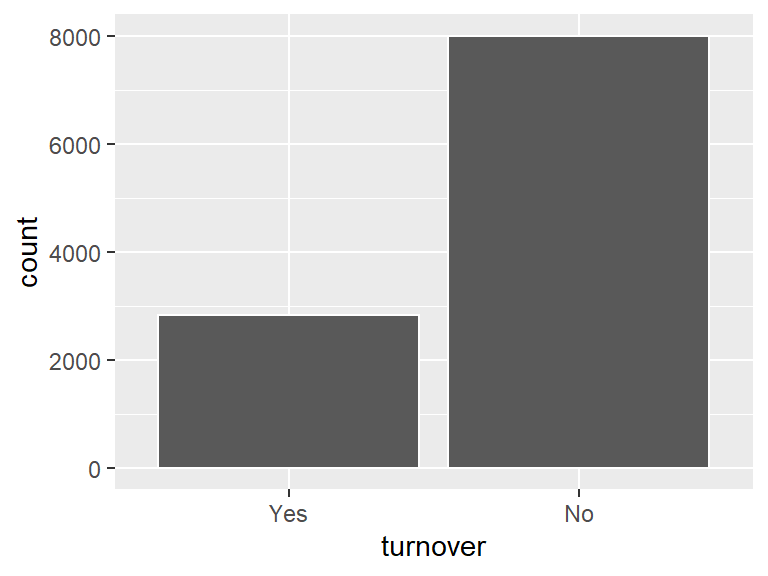
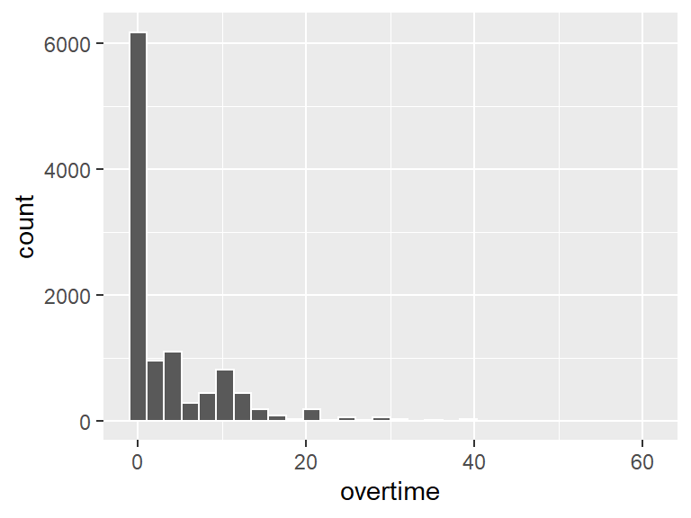
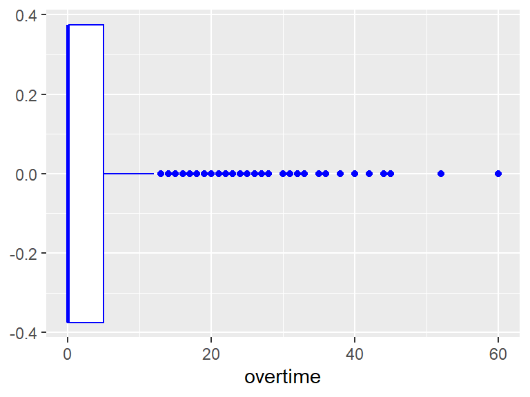
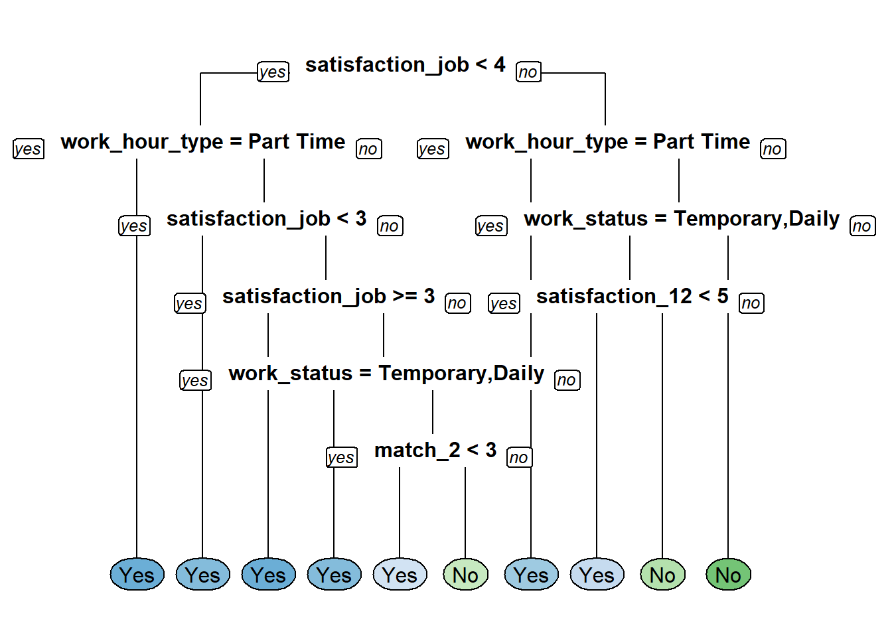
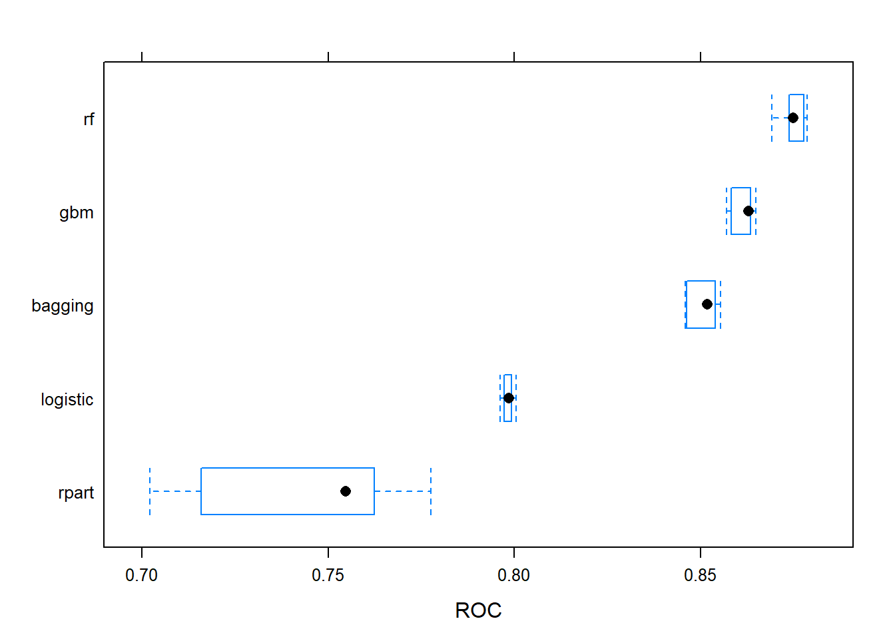

Chapter 2 A Study on Job Satisfaction and Turnover Behavior
2.1 Introduction
Job satisfaction impacts on the turnover intention of employee, which affects the turnover behavior. This analysis concerns with the impact of job satisfaction on the turnover behavior. Since turnover intention is highly correlated with job satisfaction, salary, employment status and etc, we should pay careful attention for modeling of those variables as independent variables and turnover behavior as a dependent variable in the empirical study for the impact of factors on turnover behavior.
2.2 Data Explanation
data filename : satisfy.csv
| variable | description | value |
|---|---|---|
| turnover | Whether you are preparing for job change | Yes, No |
| work_status | Employment status | Regular, Temporary, Daily |
| work_hour_type | Working Hour Form | Full Time, Part Time |
| overtime | Overtime working per week | numeric |
| satisfaction_1 | Wages or income | 1~5 |
| satisfaction_2 | Employment stability | 1~5 |
| satisfaction_3 | Contents of work (job content) | 1~5 |
| satisfaction_4 | Working environment (facilities, safety, hygiene, etc.) | 1~5 |
| satisfaction_5 | Working hours (working hours, number of working days) | 1~5 |
| satisfaction_6 | Personal development potential | 1~5 |
| satisfaction_7 | Relationships | 1~5 |
| satisfaction_8 | Welfare benefits system (social insurance and additional benefits) | 1~5 |
| satisfaction_9 | Personnel system (promotion system) | 1~5 |
| satisfaction_10 | Social reputation for what you are doing | 1~5 |
| satisfaction_11 | Autonomy and authority in what you are doing | 1~5 |
| satisfaction_12 | Social reputation for work | 1~5 |
| satisfaction_13 | The match between what you do and your aptitude and interest | 1~5 |
| satisfaction_14 | Job-related education or training | 1~5 |
| satisfaction_job | Overall satisfaction with the current job (job) | 1~5 |
| satisfaction_task | Overall satisfaction with the main job (task) | 1~5 |
| match_1 | Education level-level of match at work level | 1~5 |
| match_2 | Work skill (skill) level-the degree to which one’s skill (skill) level matches | 1~5 |
| match_3 | Contents of work-Degree of coincidence with your major (major) at the time of admission | 1~5 |
| major_knowledge | Degree of help in work of knowledge in college major | 1~5 |
We do not add prompts to R source code in this manual, and we comment out the text output by two hashes ##
by default.
Package names are in bold text (e.g., rpart), function names are formatted as code (e.g., read.csv()).
2.3 Import Data
We will use the built in read.csv() function call, which reads the data in as a data frame, and assign the data frame to a variable (using <-) so that it is stored in R’s memory. Then we will explore some of the basic arguments that can be supplied to the function. The default for read.csv() is to set the header argument to TRUE. This means that the first row of values in the .csv is set as header information (column names). If your data set does not have a header, set the header argument to FALSE. The stringsAsFactors argument is perhaps the most important argument in read.csv(), particularly if you are working with categorical data. This is because the default behavior of R is to convert character strings into factors, which may make it difficult to do such things as replace values.
satisfy_all <- read.csv(file="satisfy.csv",header=TRUE,stringsAsFactors = TRUE)R is always pointed at a directory on your computer. You can find out which directory by running the getwd() (get working directory) function; this function has no arguments. To change your working directory, use setwd() and specify the path to the desired folder.
getwd()setwd(dir)-dir – Specify a working directory. This may be from the root directory (starting with / on a Mac), it may include a double-dot (..) to move locally up a folder from the current directory, and it may include a path from the current directory.
getwd()## [1] "C:/Users/kimin/OneDrive/project/bookdown-demo-master"setwd("c:/project")2.4 Exploring and Preparing the Data
The first questions to ask in an investigation of a new dataset should be about
how the dataset is organized. If you are fortunate, your source will provide a data
dictionary, a document that describes the dataset’s features. In our case, the used
car data does not come with this documentation, so we’ll need to create our own.
The str() function provides a method for displaying the structure of R objects,
such as data frames, vectors, or lists. It can be used to create the basic outline for our data dictionary:
str(satisfy_all)## 'data.frame': 10839 obs. of 24 variables:
## $ turnover : Factor w/ 2 levels "No","Yes": 1 1 1 1 1 1 2 2 2 2 ...
## $ work_status : Factor w/ 3 levels "Daily","Regular",..: 3 2 2 2 2 2 1 2 2 3 ...
## $ work_hour_type : Factor w/ 2 levels "Full Time","Part Time": 1 1 1 1 1 1 2 1 1 1 ...
## $ overtime : int 0 5 5 2 0 0 4 10 0 2 ...
## $ satisfaction_1 : int 1 2 3 4 3 3 4 3 3 2 ...
## $ satisfaction_2 : int 4 4 4 4 3 4 3 3 5 4 ...
## $ satisfaction_3 : int 5 5 4 4 3 4 3 4 3 4 ...
## $ satisfaction_4 : int 5 4 3 2 4 4 3 3 4 5 ...
## $ satisfaction_5 : int 3 4 3 4 3 5 3 3 5 4 ...
## $ satisfaction_6 : int 5 3 3 4 4 4 2 4 3 4 ...
## $ satisfaction_7 : int 2 4 4 4 3 4 2 3 5 4 ...
## $ satisfaction_8 : int 1 4 3 3 3 4 3 3 4 4 ...
## $ satisfaction_9 : int 1 3 4 3 3 3 2 3 4 4 ...
## $ satisfaction_10 : int 3 4 3 4 3 4 2 4 4 4 ...
## $ satisfaction_11 : int 5 4 3 4 3 4 2 3 5 4 ...
## $ satisfaction_12 : int 3 3 3 4 3 3 3 3 4 4 ...
## $ satisfaction_13 : int 4 5 4 4 3 4 3 4 2 4 ...
## $ satisfaction_14 : int 2 3 3 4 3 3 3 3 4 4 ...
## $ satisfaction_job : int 3 4 3 4 3 4 3 3 3 5 ...
## $ satisfaction_task: int 4 5 4 4 3 4 3 3 3 4 ...
## $ match_1 : int 2 2 3 2 3 2 3 3 2 4 ...
## $ match_2 : int 1 4 3 2 3 2 3 4 2 4 ...
## $ match_3 : int 1 3 2 1 3 5 1 4 1 5 ...
## $ major_knowledge : int 1 4 2 2 3 4 2 4 1 5 ...For such a simple command, we learn a wealth of information about the dataset.
The statement 10839 obs informs us that the data includes 10,839 observations, which is just another way of saying that the dataset contains 10,839 records or examples. The number of observations is often simply abbreviated as n.
The 24 variables statement refers to the sixteen features that were recorded in the data. These features are listed by name on separate lines. Looking at the line for the feature called work_status, we note some additional details:
work_status : Factor w/ 3 levels "Daily","Regular",..: 3 2 2 2 2
After the variable’s name, the Factor label tells us that the feature is factor type. In this dataset, 3 of the variables are factor while others are noted as int which refers to the integer type.
In R, we can get summary statistics for a dataset by using the summary() function. To get the summary statistics for our satisfy dataset, we pass the name of the dataset to the summary() function.
summary(satisfy_all)## turnover work_status work_hour_type overtime satisfaction_1
## No :8010 Daily : 166 Full Time:9803 Min. : 0.000 Min. :1.000
## Yes:2829 Regular :8789 Part Time:1036 1st Qu.: 0.000 1st Qu.:3.000
## Temporary:1884 Median : 0.000 Median :3.000
## Mean : 3.739 Mean :3.231
## 3rd Qu.: 5.000 3rd Qu.:4.000
## Max. :60.000 Max. :5.000
## satisfaction_2 satisfaction_3 satisfaction_4 satisfaction_5 satisfaction_6
## Min. :1.000 Min. :1.00 Min. :1.00 Min. :1.000 Min. :1.000
## 1st Qu.:3.000 1st Qu.:3.00 1st Qu.:3.00 1st Qu.:3.000 1st Qu.:3.000
## Median :4.000 Median :4.00 Median :4.00 Median :4.000 Median :4.000
## Mean :3.739 Mean :3.72 Mean :3.82 Mean :3.653 Mean :3.503
## 3rd Qu.:4.000 3rd Qu.:4.00 3rd Qu.:4.00 3rd Qu.:4.000 3rd Qu.:4.000
## Max. :5.000 Max. :5.00 Max. :5.00 Max. :5.000 Max. :5.000
## satisfaction_7 satisfaction_8 satisfaction_9 satisfaction_10
## Min. :1.000 Min. :1.000 Min. :1.000 Min. :1.00
## 1st Qu.:3.000 1st Qu.:3.000 1st Qu.:3.000 1st Qu.:3.00
## Median :4.000 Median :4.000 Median :3.000 Median :4.00
## Mean :3.831 Mean :3.465 Mean :3.207 Mean :3.59
## 3rd Qu.:4.000 3rd Qu.:4.000 3rd Qu.:4.000 3rd Qu.:4.00
## Max. :5.000 Max. :5.000 Max. :5.000 Max. :5.00
## satisfaction_11 satisfaction_12 satisfaction_13 satisfaction_14
## Min. :1.000 Min. :1.000 Min. :1.000 Min. :1.00
## 1st Qu.:3.000 1st Qu.:3.000 1st Qu.:3.000 1st Qu.:3.00
## Median :4.000 Median :4.000 Median :4.000 Median :4.00
## Mean :3.658 Mean :3.604 Mean :3.672 Mean :3.48
## 3rd Qu.:4.000 3rd Qu.:4.000 3rd Qu.:4.000 3rd Qu.:4.00
## Max. :5.000 Max. :5.000 Max. :5.000 Max. :5.00
## satisfaction_job satisfaction_task match_1 match_2
## Min. :1.000 Min. :1.000 Min. :1.000 Min. :1.000
## 1st Qu.:3.000 1st Qu.:3.000 1st Qu.:3.000 1st Qu.:3.000
## Median :4.000 Median :4.000 Median :3.000 Median :3.000
## Mean :3.541 Mean :3.619 Mean :2.942 Mean :2.959
## 3rd Qu.:4.000 3rd Qu.:4.000 3rd Qu.:3.000 3rd Qu.:3.000
## Max. :5.000 Max. :5.000 Max. :5.000 Max. :5.000
## match_3 major_knowledge
## Min. :1.000 Min. :1.000
## 1st Qu.:2.000 1st Qu.:2.000
## Median :3.000 Median :3.000
## Mean :3.175 Mean :3.208
## 3rd Qu.:4.000 3rd Qu.:4.000
## Max. :5.000 Max. :5.000Changing the order of factor levels, You can use fct_relevel(). It takes a factor, f, and then any number of levels that you want to move to the front of the line.
satisfy_all$turnover <- fct_relevel(satisfy_all$turnover,"Yes","No")
satisfy_all$work_status <- fct_relevel(satisfy_all$work_status,"Regular","Temporary","Daily")The tidyverse provides us with a powerful and flexible package for visualizing data called ggplot2. The functions provided by ggplot2 follow a principle and consistent syntax known as the grammar of graphics. For readers who are interested in an in-depth explanation of ggplot2 and the grammar of graphics, we refer you to the books ggplot2 by Hadley Wickham and The Grammar of Graphics by Leland Wilkinson.
satisfy_all %>%
ggplot(aes(turnover)) +
geom_bar(color="white")
satisfy_all %>%
ggplot(aes(overtime)) +
geom_histogram(color="white")## `stat_bin()` using `bins = 30`. Pick better value with `binwidth`.
satisfy_all %>%
ggplot(aes(overtime)) +
geom_boxplot(color="blue")
2.5 Splitting the data (train set & test set)
The createDataPartition() function in caret package creates stratified random samples from the original data and takes three main arguments. The first argument (y) specifies the class or dependent variable, the second argument (p) specifies the proportion of examples that should be assigned to the training set, and the third argument (list) specifies the format of the results that are returned. This argument can be either TRUE or FALSE. If it is TRUE, then the results of the function are returned as a list (single row), but if it is FALSE, then the results are returned as a matrix (several rows). Note that we use the set.seed() function here again. By setting the seed value, we ensure that we get the same data partitions every time we run the code.
# Create a vector of indices which is an 80% random sample
set.seed(1234)
index <- createDataPartition(satisfy_all$turnover, p = 0.8, list = FALSE)
satisfy_train <- satisfy_all[index, ]
prop.table(table(satisfy_train$turnover))##
## Yes No
## 0.2610701 0.7389299satisfy_test <- satisfy_all[-index, ]
prop.table(table(satisfy_test$turnover))##
## Yes No
## 0.2607291 0.73927092.6 Dealing with Class Imbalance
Class imbalance is a common problem when working with real-world data. It degrades the performance of a machine learning model because it biases the model toward the majority class at the expense of the minority class. Before we build a model, we need to address this problem. There are several approaches to solving class imbalance problems; one of them is by using a synthetic minority oversampling technique (SMOTE).
This technique works by creating new synthetic samples from the minority class to resolve the imbalance. In R, the DMwR package provides us with a function called SMOTE(), which we can use to balance our training data. The SMOTE() function accepts arguments that describe the formula for the prediction problem, the data frame containing the original imbalanced data, a specification of how many extra cases from the minority class are to be generated (perc.over), and a specification for how many extra cases from the majority class should be selected for each case generated from the minority class (perc.under). The output of the function is a data frame of the balanced data.
set.seed(1234)
satisfy_train <- SMOTE(turnover ~ ., data.frame(satisfy_train),
perc.over = 100, perc.under = 200)2.7 Resampling methods to estimate model accuracy
When you are building a predictive model, you need to evaluate the capability of the model on unseen data. This is typically done by estimating accuracy using data that was not used to train the model. The caret package in R provides a number of methods to estimate the accuracy of a machine learning algorithm. In this section you will discover 5 approaches for estimating model performance on unseen data.
2.7.1 Estimating model accuracy
When working on a project you often only have a limited set of data and you need to choose carefully how you use it. Predictive models required data on which to train. You also need a dataset that the model has not seen during training on which it can make predictions. The accuracy of the model predictions on data unseen during training can be used as an estimate for the accuracy of the model on unseen data in general.
You cannot estimate the accuracy of the model on the data used to train it. An ideal model could just remember all of the training instances and make perfect predictions. You must hold data aside primarily for the purposes of model evaluation.
There are methods that you can use if you have a lot of data and do not need to be careful about how it is spent during training. More commonly your dataset has a fixed size and you need to use statistical techniques that make good use of a limited size dataset. These statistical methods are often called resampling methods as they take multiple samples or make multiple splits of your dataset into portions that you can use for model training and model testing. In the following sections you are going to discover how to use five different resampling methods that you can use to evaluate the accuracy of your data in R.
2.7.2 k-fold cross validation
Of all the approaches to cross-validation, the most commonly used is k-fold cross-validation. In this approach, after the test data has been sequestered, the remaining data is divided into k completely separate random partitions of approximately equal size. These partitions are known as folds. The folds represent the data that will be used to validate the model during each of the k iterations of the repeated holdout. Although k can be set to any value, in practice, k is often set to either 5 or 10.
ctrl_cv <- trainControl(method = "cv", number = 5)
set.seed(1234)
model_rpart_cv <- train(turnover ~ .,
data = satisfy_train,
metric = "Accuracy",
method = "rpart",
trControl = ctrl_cv)2.7.3 repeated k-fold cross validation
Repeated k-fold is the most preferred cross-validation technique for both classification and regression machine learning models. Shuffling and random sampling of the data set multiple times is the core procedure of repeated k-fold algorithm and it results in making a robust model as it covers the maximum training and testing operations. The working of this cross-validation technique to evaluate the accuracy of a machine learning model depends upon 2 parameters. The first parameter is k which is an integer value and it states that the given dataset will be split into K folds(or subsets). Among the k folds, the model is trained on the k-1 subsets and the remaining subset will be used to evaluate the model’s performance. These steps will be repeated up to a certain number of times which will be decided by the second parameter of this algorithm and thus it got its name as Repeated k-fold i.e., the k-fold cross-validation algorithm is repeated a certain number of times.
ctrl_repeatedcv <- trainControl(method = "repeatedcv",
number = 10, repeats = 3)
set.seed(1234)
model_rpart_repeatedcv <- train(turnover ~ .,
data = satisfy_train,
metric = "Accuracy",
method = "rpart",
trControl = ctrl_repeatedcv)2.7.4 leave one out cross validation
Another common approach to cross-validation is the leave-one-out cross-validation method (LOOCV). The approach is essentially k-fold cross-validation with k set to n (the number of instances in the dataset). In the LOOCV approach, during the first iteration, the first instance is held out for validation while the rest of the data is used to train the model. Then the performance of the model is evaluated against the single instance that was held out. This process is repeated n-1 additional times until all the instances in the dataset have been used once for validation. After the last iteration, we end up with n estimates of the model’s performance from each of the iterations. The average of these estimates is used as the LOOCV estimate of model performance.
ctrl_loocv <- trainControl(method = "LOOCV")
set.seed(1234)
model_rpart_loocv <- train(turnover ~ .,
data = satisfy_train,
metric = "Accuracy",
method = "rpart",
trControl = ctrl_loocv)2.7.5 leave group out cross validation
This approach is similar to k-fold cross-validation but with one notable difference. In this approach, instead of creating a set number of folds (validation sets) at the beginning of the process, as we do in k-fold cross-validation, the random sample that makes up the validation set is created during each iteration During the first iteration, a random sampling without replacement approach is used to create the validation set. This dataset is held out for validation, and the remainder of the data is used to train the model. In the second iteration, a new independent validation set is randomly selected. Because of the random nature of the sampling approach, it is possible and likely that some of the instances selected as part of this new validation set were also selected as part of the validation set in the previous iteration.
ctrl_lgocv <- trainControl(method = "LGOCV", p = .1, number = 10)
set.seed(1234)
model_rpart_lgocv <- train(turnover ~ .,
data = satisfy_train,
metric = "Accuracy",
method = "rpart",
trControl = ctrl_lgocv)2.7.6 bootstrap
The basic idea behind bootstrap sampling is to create a training dataset from the original data using a random sampling with replacement approach. A version of this technique, known as the 0.632 bootstrap, involves random sampling a dataset with n instances, n different times with replacement, to create another dataset also with n instances. This new dataset is used for training, while the instances from the original data, which were not selected as part of the training data, are used for validation.
ctrl_boot <- trainControl(method = "boot632", number = 3)
set.seed(1234)
model_rpart_boot <- train(turnover ~ .,
data = satisfy_train,
metric = "Accuracy",
method = "rpart",
trControl = ctrl_boot)2.8 Spot-Check Machine Learning Algorithms
What algorithm should you use on your dataset? This is the most common question in applied machine learning. It’s a question that can only be answered by trial and error, or what I call: spot-checking algorithms. In this session you will discover how to spot-check algorithms on a dataset using R.
2.8.1 CART Algorithm
The CART algorithm is implemented in R as part of the rpart package. This package provides a similarly named function rpart(), which provides an implementation of CART (Classification And Regression Trees) for classification and regression.
This function takes three primary arguments. The first is the
prediction formula, which we specify as employ ~ . to mean that our model should use all the other variables in the dataset as predictors for the employ variable. The second argument is the method, which we specify as class. This means that we are building a classification tree. The final argument is the training dataset that will be used to build the model.
# Building a CART model
model_rpart <- rpart(turnover ~ .,method = "class",
data = satisfy_train,
control = rpart.control(maxdepth = 7,
cp = 0.005))Now that we’ve trained our decision tree model, let’s visualize it. To do so, we use the rpart.plot() function from the similarly named rpart.plot package.
# Plot the model
rpart.plot(x = model_rpart, yesno = 2, type = 0, extra = 0)
2.8.2 Bagging Algorithm
One of the most common ensemble learning approaches is known as bagging, which stands for bootstrap aggregating. The name comes from the fact that bagging ensembles use a bootstrap sampling approach for the allocation function, which is used to generate the data assigned to each model in the ensemble. Bagging ensembles are typically made up of homogenous learners, which are trained independently and in parallel.
Let’s start by training a bagged tree model. You’ll be using the bagging() function from the ipred package. The number of bagged trees can be specified using the nbagg parameter, but here we will use the default (25).
If we want to estimate the model’s accuracy using the “out-of-bag” (OOB) samples, we can set the the coob parameter to TRUE. The OOB samples are the training obsevations that were not selected into the bootstrapped sample (used in training). Since these observations were not used in training, we can use them instead to evaluate the accuracy of the model (done automatically inside the bagging() function).
# Bagging is a randomized model, so let's set a seed (123) for reproducibility
set.seed(123)
# Building a bagged model
model_bagging <- bagging(formula = turnover ~ .,
data = satisfy_train,
coob = TRUE)2.8.3 randomforest Algorithm
One of the most popular bagging ensemble methods is the random forests or decision
tree forests ensemble technique. It gets its name from the fact that the ensemble consists of a large number of decision tree learners (which are collectively called a forest) and that its allocation function combines both bootstrap sampling and random feature selection to generate the data assigned to each learner in the ensemble. By using only a random subset of the full feature set, random forests are able to handle very wide datasets (datasets with a large number of features).
To illustrate the random forests ensemble technique in R, we use the rf method
in caret, which depends on the aptly named randomForest package. Using the
modelLookup() command for the rf method reveals that it has only one tunable
parameter: mtry. This is the number of randomly selected features to consider at each split (more on this shortly).
modelLookup("rf")## model parameter label forReg forClass probModel
## 1 rf mtry #Randomly Selected Predictors TRUE TRUE TRUEBased on the documentation provided by the randomForest package, the default value for mtry is the square root of the number of features in the dataset when working on a classification problem.
# Building a Random Forest model
set.seed(123) # for reproducibility
model_rf <- randomForest(formula = turnover ~ .,
data = satisfy_train)2.8.4 gbm Algorithm
Boosting is a method of converting weak learners into strong learners. In boosting, each new tree is a fit on a modified version of the original data set. The gradient boosting algorithm (gbm) can be most easily explained by first introducing the AdaBoost Algorithm.The AdaBoost Algorithm begins by training a decision tree in which each observation is assigned an equal weight. After evaluating the first tree, we increase the weights of those observations that are difficult to classify and lower the weights for those that are easy to classify. The second tree is therefore grown on this weighted data. Here, the idea is to improve upon the predictions of the first tree. Our new model is therefore Tree 1 + Tree 2. We then compute the classification error from this new 2-tree ensemble model and grow a third tree to predict the revised residuals. We repeat this process for a specified number of iterations. Subsequent trees help us to classify observations that are not well classified by the previous trees. Predictions of the final ensemble model is therefore the weighted sum of the predictions made by the previous tree models.
In order to train a gbm model in R, you will first have to install and call the gbm library. The gbm function requires you to specify certain arguments. You will begin by specifying the formula. This will include your response and predictor variables. Next, you will specify the distribution of your response variable. If nothing is specified, then gbm will try to guess. Some commonly used distributions include- “bernoulli” (logistic regression for 0–1 outcome), “gaussian” (squared errors), “tdist”(t-distribution loss), and “poisson” (count outcomes). Finally, we will specify the data and the n.trees argument (after all gbm is an ensemble of trees!) By default, the gbm model will assume 100 trees, which can provide is a good estimate of our gbm’s performance.
# Building a 10000-tree GBM model
# Convert "yes" to 1, "no" to 0
gbm_train <- satisfy_train
gbm_train$turnover <- ifelse(gbm_train$turnover == "Yes", 1, 0)
set.seed(123)
model_gbm <- gbm(formula = turnover ~ .,
distribution = "bernoulli",
data = gbm_train,
n.trees = 10000)2.8.5 logistic model
you used the glm() function to build a logistic regression model. As with many of R’s machine learning methods, you can apply the predict() function to the model object to forecast future behavior. By default, predict() outputs predictions in terms of log odds unless type = "response" is specified. This converts the log odds to probabilities.
model_logistic <- glm(turnover ~. ,data = satisfy_train,
family="binomial")2.9 Model Evaluation Metrics
What metrics can you use to evaluate your machine learning algorithms? In this lesson you will discover how you can evaluate your machine learning algorithms in R using a number of standard evaluation metrics. After completing this lesson you will know:
- How to use Accuracy and Kappa to evaluate model skill on classification problems.
- How to use Area Under ROC Curve, sensitivity and specificity to evaluate model skill on binary classification problems.
2.9.1 Accuracy and Kappa
Accuracy and Kappa are the default metrics used to evaluate algorithms on binary and multiclass classification datasets in caret. Accuracy is the percentage of correctly classified instances out of all instances. It is more useful on a binary classification than multi-class classification problem because it can be less clear exactly how the accuracy breaks down across those classes. Kappa or Cohen’s Kappa is like classification accuracy, except that it is normalized at the baseline of random chance on your dataset. It is a more useful measure to use on problems that have an imbalance in the classes (e.g. a 70% to 30% split for classes 0 and 1 and you can achieve 70% accuracy by predicting all instances are for class 0).
# Accuracy and Kappa
ctrl_cv <- trainControl(method = "cv", number = 5)
set.seed(1234)
model_glm_cv_accuracy <- train(turnover ~ .,
data = satisfy_train,
metric = "Accuracy",
method = "glm", family = "binomial",
trControl = ctrl_cv)2.9.2 Area Under ROC Curve
ROC metrics are only suitable for binary classification problems (e.g. two classes). To calculate ROC information, you must change the summaryFunction in your trainControl to be twoClassSummary. This will calculate the Area Under ROC Curve (AUROC) also called just Area Under curve (AUC), sensitivity and specificity. ROC is actually the area under the ROC curve or AUC. The AUC represents a models ability to discriminate between positive and negative classes. An area of 1.0 represents a model that predicts perfectly. An area of 0.5 represents a model as good as random.
- Sensitivity is the true positive rate also called the recall. It is the number of instances from the positive (first) class that actually predicted correctly.
- Specificity is also called the true negative rate. Is the number of instances from the negative class (second class) that were actually predicted correctly.
ROC can be broken down into sensitivity and specificity. A binary classification problem is really a trade-off between sensitivity and specificity.
# Area Under ROC Curve
ctrl_cv <- trainControl(method = "cv", number = 5, classProbs = TRUE,
summaryFunction = twoClassSummary)
set.seed(1234)
model_glm_cv_roc <- train(turnover ~ .,
data = satisfy_train,
metric = "ROC",
method = "glm", family = "binomial",
trControl = ctrl_cv)2.10 The Performance of Machine Learning Algorithms
How do you compare the estimated accuracy of different machine learning algorithms effectively?
In this lesson you will discover techniques that you can use to compare machine learning algorithms in R.
it’s time to compare their out-of-sample predictions and choose which one is the best model for your dataset.
You can compare models in caret using the resamples() function, provided they have the same training data and use the same trainControl object with preset cross-validation folds. resamples() takes as input a list of models and can be used to compare dozens of models at once (though in this case you are only comparing five models).
# Create custom indices: myFolds
set.seed(1234)
myFolds <- createFolds(satisfy_train$turnover, k = 5)
# Create reusable trainControl object: myControl
myControl <- trainControl(
summaryFunction = twoClassSummary,
classProbs = TRUE, # IMPORTANT!
verboseIter = FALSE,
savePredictions = TRUE,
index = myFolds
)
model_caret_rpart <- train(
turnover ~ .,
data = satisfy_train,
metric = "ROC",
method = "rpart",
trControl = myControl)
model_caret_bagging <- train(
turnover ~ .,
data = satisfy_train,
metric = "ROC",
method = "treebag",
trControl = myControl)
model_caret_ranger <- train(
turnover ~ .,
data = satisfy_train,
metric = "ROC",
method = "ranger",
trControl = myControl)
model_caret_logistic <- train(
turnover ~ .,
data = satisfy_train,
metric = "ROC",
method = "glm", family = "binomial",
trControl = myControl)
model_caret_gbm <- train(
turnover ~ .,
data = satisfy_train,
metric = "ROC",
method = "gbm",
trControl = myControl)# Create model_list
model_list <- list(rpart = model_caret_rpart,
rf = model_caret_ranger,
logistic = model_caret_logistic,
bagging = model_caret_bagging,
gbm = model_caret_gbm)caret provides a variety of methods to use for comparing models. All of these methods are based on the resamples() function. The box-and-whisker plot allows you to compare the distribution of predictive accuracy (in this case AUC) for the two or more models.
In general, you want the model with the higher median AUC, as well as a smaller range between min and max AUC.
You can make this plot using the bwplot() function, which makes a box and whisker plot of the model’s out of sample scores. Box and whisker plots show the median of each distribution as a line and the interquartile range of each distribution as a box around the median line. You can pass the metric = “ROC” argument to the bwplot() function to show a plot of the model’s out-of-sample ROC scores and choose the model with the highest median ROC.
# Pass model_list to resamples(): resamples
resamps <- resamples(model_list)
# Summarize the results
summary(resamps)##
## Call:
## summary.resamples(object = resamps)
##
## Models: rpart, rf, logistic, bagging, gbm
## Number of resamples: 5
##
## ROC
## Min. 1st Qu. Median Mean 3rd Qu. Max. NA's
## rpart 0.7020505 0.7157649 0.7546550 0.7424550 0.7622874 0.7775173 0
## rf 0.8691685 0.8737564 0.8749277 0.8748478 0.8776903 0.8786960 0
## logistic 0.7962687 0.7971766 0.7984307 0.7983164 0.7992928 0.8004131 0
## bagging 0.8459675 0.8462392 0.8518077 0.8506775 0.8539794 0.8553938 0
## gbm 0.8569389 0.8583258 0.8629288 0.8612928 0.8634412 0.8648294 0
##
## Sens
## Min. 1st Qu. Median Mean 3rd Qu. Max. NA's
## rpart 0.6645500 0.6861717 0.7300580 0.7518268 0.8108780 0.8674765 0
## rf 0.7291552 0.7297819 0.7421314 0.7435405 0.7524151 0.7642187 0
## logistic 0.6736610 0.6952802 0.6979569 0.6952289 0.6998896 0.7093569 0
## bagging 0.7269464 0.7452388 0.7506902 0.7461349 0.7510351 0.7567642 0
## gbm 0.7310878 0.7424786 0.7512424 0.7486751 0.7513111 0.7672557 0
##
## Spec
## Min. 1st Qu. Median Mean 3rd Qu. Max. NA's
## rpart 0.5480398 0.5911099 0.7030086 0.6840147 0.7868581 0.7910571 0
## rf 0.7962452 0.8211427 0.8235781 0.8248667 0.8401436 0.8432238 0
## logistic 0.7614578 0.7615236 0.7653878 0.7650178 0.7669796 0.7697405 0
## bagging 0.7614578 0.7775324 0.7836047 0.7863854 0.7934843 0.8158476 0
## gbm 0.7733297 0.8012697 0.8175041 0.8094624 0.8210933 0.8341154 0# Create bwplot
bwplot(resamps, metric = "ROC")
2.11 Improving Model Performance
It is difficult to find a good machine learning algorithm for your problem. But once you do, how do you get the best performance out of it. In this session you will discover three ways that you can tune the parameters of a machine learning algorithm in R. Most machine learning techniques have one or more parameters that need to be set before the learning process begins. These parameters are commonly known as hyperparameters.
2.11.1 Random Search
One search strategy that we can use is to try random values within a range. This can be good if we are unsure of what the value might be and we want to overcome any biases we may have for setting the parameter.
To use random search, another option is available in trainControl called search. Possible values of this argument are "grid" and "random". The built-in models contained in caret contain code to generate random tuning parameter combinations. The total number of unique combinations is specified by the tuneLength option to train.
# random search
ctrl_random <- trainControl(method = "repeatedcv" , number=5,
repeats = 3,
search = "random")
set.seed(1234)
ranger_random <- train(turnover ~ ., data=satisfy_train, method="ranger",
metric = "Accuracy",
tuneLength = 5, verbose = FALSE,
trControl = ctrl_random)
ranger_random## Random Forest
##
## 9056 samples
## 23 predictor
## 2 classes: 'Yes', 'No'
##
## No pre-processing
## Resampling: Cross-Validated (5 fold, repeated 3 times)
## Summary of sample sizes: 7244, 7246, 7245, 7244, 7245, 7246, ...
## Resampling results across tuning parameters:
##
## min.node.size mtry splitrule Accuracy Kappa
## 5 6 extratrees 0.8296153 0.6592304
## 5 7 extratrees 0.8294681 0.6589360
## 9 2 gini 0.8224011 0.6448018
## 12 16 extratrees 0.8208174 0.6416346
## 15 4 extratrees 0.8064625 0.6129253
##
## Accuracy was used to select the optimal model using the largest value.
## The final values used for the model were mtry = 6, splitrule = extratrees
## and min.node.size = 5.2.11.2 Grid Search
Another search you can use is to define a grid of algorithm parameters to try. Each axis of the grid is an algorithm parameter, and points in the grid are specific combinations of parameters. Because we are only tuning one parameter, the grid search is a linear search through a vector of candidate values.
# grid search
ctrl_grid <- trainControl(method = "repeatedcv" , number = 5,
repeats = 3,
search = "grid")
set.seed(1234)
tune_grid <- expand.grid( min.node.size= seq(5,10,2),
mtry= seq(2,7),
splitrule= c("extratrees","gini"))
ranger_grid <- train(turnover ~ ., data = satisfy_train, method = "ranger",
metric = "Accuracy", tuneGrid = tune_grid,
verbose = FALSE,
trControl = ctrl_grid)2.11.3 Adaptive Resampling
Models can benefit significantly from tuning but the optimal values are rarely known beforehand. train can be used to define a grid of possible points and resampling can be used to generate good estimates of performance for each tuning parameter combination. However, in the nominal resampling process, all the tuning parameter combinations are computed for all the resamples before a choice is made about which parameters are good and which are poor.
caret contains the ability to adaptively resample the tuning parameter grid in a way that concentrates on values that are the in the neighborhood of the optimal settings.
To use the adaptive procedure, the trainControl option needs some additional arguments:
- min is the minimum number of resamples that will be used for each tuning parameter. The default value is 5 and increasing it will decrease the speed-up generated by adaptive resampling but should also increase the likelihood of finding a good model.
- alpha is a confidence level that is used to remove parameter settings. To date, this value has not shown much of an effect.
- method is either “gls” for a linear model or “BT” for a Bradley-Terry model. The latter may be more useful when you expect the model to do very well (e.g. an area under the ROC curve near 1) or when there are a large number of tuning parameter settings.
- complete is a logical value that specifies whether train should generate the full resampling set if it finds an optimal solution before the end of resampling. If you want to know the optimal parameter settings and don’t care much for the estimated performance value, a value of FALSE would be appropriate here
# adaptive resampling
fitControl <- trainControl(method = "adaptive_cv",
number = 3, repeats = 3,
adaptive = list(min = 2,
alpha = 0.05,
method = "gls",
complete = TRUE),
search = "random")
set.seed(1234)
ranger_adaptive <- train(turnover ~ ., data = satisfy_train,
method = "ranger",
trControl = fitControl,
verbose = FALSE,
tuneLength = 7)
ranger_adaptive## Random Forest
##
## 9056 samples
## 23 predictor
## 2 classes: 'Yes', 'No'
##
## No pre-processing
## Resampling: Adaptively Cross-Validated (3 fold, repeated 3 times)
## Summary of sample sizes: 6038, 6038, 6036, 6037, 6038, 6037, ...
## Resampling results across tuning parameters:
##
## min.node.size mtry Accuracy Kappa Resamples
## 5 4 0.8178010 0.6356021 9
## 5 6 0.8184270 0.6368542 9
## 6 15 0.8145767 0.6291542 4
## 9 22 0.8125066 0.6250142 4
## 12 2 0.7955600 0.5911199 2
## 15 7 0.8127899 0.6255799 2
## 16 14 0.8122929 0.6245858 2
##
## Tuning parameter 'splitrule' was held constant at a value of extratrees
## Accuracy was used to select the optimal model using the largest value.
## The final values used for the model were mtry = 6, splitrule = extratrees
## and min.node.size = 5.2.12 Finalize Your Machine Learning Model
Once you have an accurate model on your test harness you are nearly done. But not yet. There are still a number of tasks to do to finalize your model. The whole idea of creating an accurate model for your dataset was to make predictions on unseen data. There are three tasks you may be concerned with:
- Making new predictions on unseen data.
- Creating a standalone model using all training data.
- Saving your model to file for later loading and making predictions on new data.
# Finalize Your Machine Learning Model
finalModel <- randomForest(turnover ~ .,
data = satisfy_train,
min.node.size = 5,
mtry = 6,
splitrule = "extratrees",
verbose = FALSE,
)
final_predictions <- predict(finalModel, satisfy_test,type="class")
confusionMatrix(final_predictions, satisfy_test$turnover, positive= "Yes")## Confusion Matrix and Statistics
##
## Reference
## Prediction Yes No
## Yes 354 395
## No 211 1207
##
## Accuracy : 0.7204
## 95% CI : (0.7009, 0.7392)
## No Information Rate : 0.7393
## P-Value [Acc > NIR] : 0.9783
##
## Kappa : 0.3437
##
## Mcnemar's Test P-Value : 1.055e-13
##
## Sensitivity : 0.6265
## Specificity : 0.7534
## Pos Pred Value : 0.4726
## Neg Pred Value : 0.8512
## Prevalence : 0.2607
## Detection Rate : 0.1634
## Detection Prevalence : 0.3456
## Balanced Accuracy : 0.6900
##
## 'Positive' Class : Yes
##